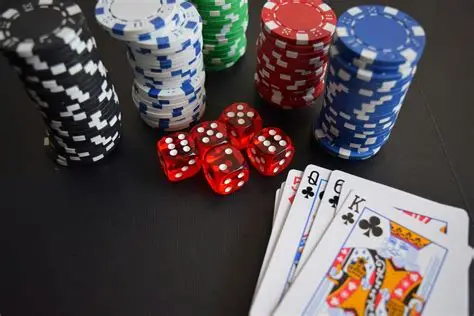
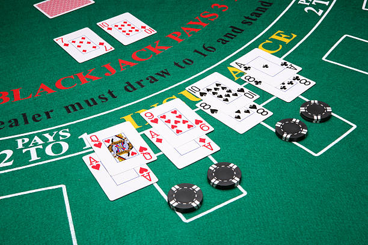
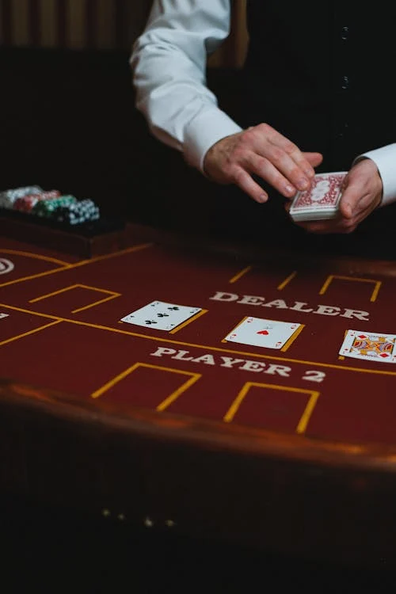

BlackJack traces its roots to 17th century Europe, particularly Spain and France. The spanish game Veintiuno was an indication
that the game was played in Castile at the beginning of the 17th century, with the ace valued as 1 or 11 and the goal of reaching
21 points without exceeding it. In France, the game was known as Vingt-et-un and became popular in casinos and among the aristocracy
during the early 1700s. The game appeared in Britain in the late 18th century, with the first formal rules published around 1800 under
the name vingt-un. The game was then brought to America in the early 19th century, where it became an American Variant. The game
became popular in gambling halls, especially in New Orleans.
The name blackjack emerged around 1899 in the United States. Gambling houses offered bonus payouts to attract players, including
a ten-to-one payout for a hand containing an ace and a black jack(jack of spades or clubs). Although the bonus was leter discontinued,
the name persisted. Some historians suggest the term may also have been influenced by prospectors during the Klondike Gold Rush,
linking the top hand to the mineral blackjack associated with gold.
Blackjack has maintained it popularity due to its simple rules and strategic depth, appearing in literature, films, and online casinos.
Its evolution from European card games to a globally recognized casino classic demonstrated a blend of luck, skill, cultural adaptation
over more than 400 years.


